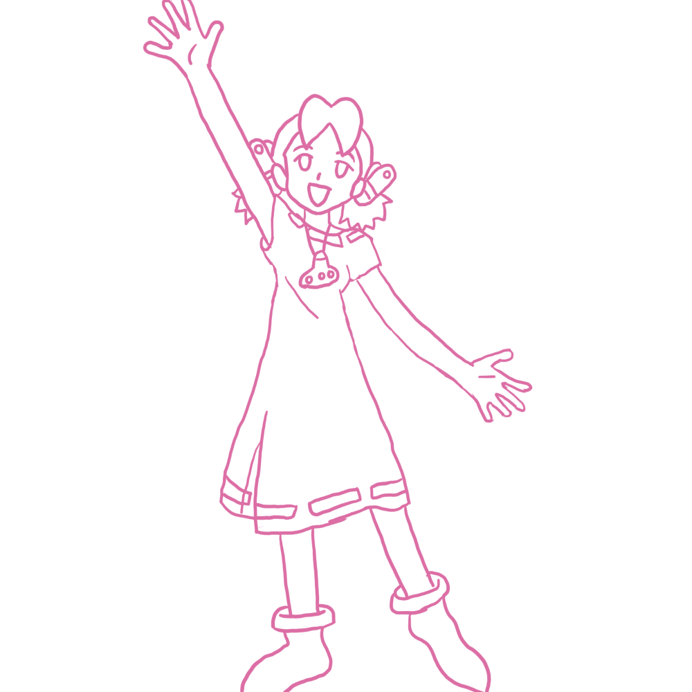

Art Tutorial 6, learning to scale
This will be a different type of tutorial
This won't be a proper drawing tutorial, and really, it's more of a way to force me to draw this stuff more often and, in doing so, get more ideas for other stuff I want to do. But it should give a few ideas. Keep in mind ALL pictures drawn are drawn in 1000x1000, I like the 4:3 resolution for drawings, unless I'm making a banner, in which 16:9 is better. The extra space isn't always required, as I will explain.
But what do I mean by scaling?
Perspective does play a part in scale, but that isn't what I'm referring to. You don't need to draw the body taking up the the whole page of the picture, depending on what you want to show in the picture. For example, a full body picture may not be needed if you want to emphasize a facial expression, or if you want to show a weapon being held, do you need to see the whole picture? If you leave too much negative/empty space around the object drawing, it may look out of place and distract people from what the actual focus is or may lessen what you want to make.
The most common terms are:
Headshot; best used for when you're trying to only focus on facial features, it usually stops around the neck.

Bust shot/half body; this is used to show the head down to about the waist, but some people stop by the waist instead.

Full body picture. Shows the whole body from head to feet.
Now that we have an idea about sizing, let's talk about space. More specifically, about what negative space can do to a picture.
Here's the roughly the same image: one is zoomed out, and one isn't. See the difference?
We have the same space in the bottom left, but because I had to zoom out to show more of the scythe/body, it looks a bit more awkward now. Of course, we can draw something behind it/under it to fix this issue, but we're now doing more work for something that we didn't have to when showing less.
You may think if you lower the resolution of your canvas, then it'd be easier to draw a certain size, but that's not true.
Of course, on actual paper, you can get different-sized paper.
Drawing a rectangle to scale
If you have a hard time visualizing something to be smaller, you can instead draw a square/rectangle for the size you want. This can be helpful if you want to draw multiple smaller sketches on a bigger paper or if you want to help with sizing. If you remember, back to my first tutorial, scaling properly is key, and within the rectangle, you can add lines to scale the figure.


Now that we have an understanding, of different picture scaling, and how to determine the sizes, let's continue.
If you want to draw something more complex, not just a picture with the characters facing forward like I showed you how to do in the previous tutorial. The first step is you'll have to visualize things around them. This is to say, background, what pose they'll be doing, if you're doing color, how the sun will cast a shadow.
If the focus isn't on the character for the drawing, the character could be drawn smaller compared to what you want to emphasize or the other way around if needed.


I hope by giving a few other pictures at different shots and angles, you can see how moving the camera closer/farther or with things around them gives depths without needing shading.
Let's make a full picture with these concepts in mind.
This won't go into great detail like my last tutorial did, as the images above and the text should give enough details/ideas on the topics discussed. However, I'll still show off a bit of a WiP timelapse thing to give an idea of how I draw things and the different phases of what I want to focus on.

I started with a rectangle to where I wanted the focus to be on and started to draw from there.

Expanded the roof, and made the space for the text. Now that I have the base for how I want things to go, we can start with the rest.

Added a person and window. Now that all of that is done, I have to decide what I want the background to be, and what to have inside the building.

Added the text, will move it out of the way of the docks. With all of this completed, I'll draw over it with a new layer.

Finished up the rest of the background, and I added clothes to the person. Now that all our line art is done, we can start coloring.
I won't be showing the coloring process, as that's not what the tutorial is for, but the next tutorial will be about coloring. So I'll skip ahead to the finished picture. I'll be adding the text in the post for the front page.